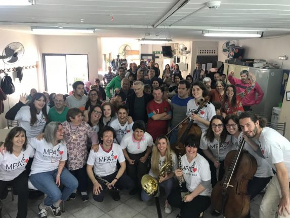

Desarrollo Academico
Está destinado al desarrollo académico y a la capacitación laboral para adolescentes y jóvenes entre 14 y 25 años de edad con dificultades para el aprendizaje, desarrollo académico en las diferentes áreas curriculares, capacitación laboral, prácticas y pasantías laborales. Así, se garantiza la continuidad escolar de aquellos/as alumnos/as que no puedan acceder al Nivel Secundario. Estos/as jóvenes se encuentran en la Institución en un ambiente de afecto y labor que les permite relacionarse con el conocimiento y adquirir seguridad y autonomía.
